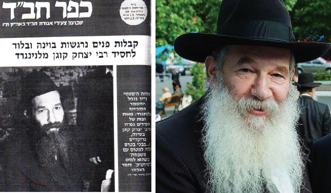

The Pain of Leaving and Then the Tremendous Relief
R’ Yitzchok Kogan was a key activist in spreading Judaism and Chassidus in Leningrad. For twelve years he battled with the KGB in order to get a permit to leave, and the permit was finally granted on the Chag HaGeula of 12 Tammuz 5764. * Crowds of people came to part with him at his home and at the airport, despite the fact that KGB agents circulated openly, recording and documenting all the goings on.

In the year 5740, my friends approached the Rebbe and asked for a bracha for me to merit to leave the Soviet Union. The Rebbe seemed to ignore the request and said, “I give him a blessing that he succeed in all that he does.” However, when R’ Daniel Branover asked the Rebbe for a bracha for me on Rosh Chodesh Tammuz 5746, the Rebbe gave a shocking response, “They will meet soon.”
A few days later, on 12 Tammuz, I was called to appear at the main office of OVIR. The persecution against us was then at its peak. I went there, having no choice in the matter, and was apprehensive. At that time, they kept a car parked opposite my home doing constant surveillance.
We had found out that at that time, the KGB investigators had begun using a certain type of gas that affects the senses and causes a person to speak more than prudently, and to agree to waive their rights under interrogation. They used this to get them to admit to all sorts of things. For added security, I took along with me Alexander Sheinin, to serve as a witness in case they would try to drug me, so he could testify if necessary that I had been under the influence of the gas.
When I entered the office, the clerk directed me to sit on the side and to wait until I was called. I sat and said T’hillim, and when I finished chapter 130 with the words, “And He will redeem Yisroel from all of his sins,” I was called to enter the inner room. When I entered the room, my heart sank. Around the table were sitting about fifteen staff members of OVIR, all dressed in full parade regalia, with all of their medals and rank symbols.
“Citizen Kogan,” began the senior officer in the room, “you have not yet recanted your request to leave Russia?”
I answered in the negative.
There was silence for a moment, and then he said to me the long hoped for words, “We think that you can make aliya at this time.”
I immediately asked, “With my parents?”
“No, only you.”
“If so, as I have been waiting so many years, I will wait a few more. I am not making a protest, but I will remain here. My father has a heart condition and has undergone surgery, and I will not leave him here alone.”
A long moment passed until they got their wits about them. They said, “Citizen Kogan, if you want them to leave, fill out the appropriate forms and wait for them to be validated.”
I knew very well what that meant. I had waited twelve years, and who knew what would be with my parents. Immediately, I answered that I would not write anything and that I had decided to stay in Russia until my parents would be freed.
“But you applied twelve years ago, and they only applied two years ago.”
I refused.
“Citizen Kogan, this is for your own good!”
Again I refused, “Without my parents, I am not leaving here!”
Since this was highly unusual, they allowed me to immediately submit a request for them and that same day, I went to the OVIR building where the top manager was already waiting outside for me. As soon as I emerged from the car, he said to me, “Yitzchok Abramovich, don’t get angry, everything is arranged. You already got a permit for the whole family. Just fill out this form and here is your freedom document.”
I submitted my first request to leave the Soviet Union in 5734, and it was twelve years later in 5746 that I was allowed to leave. In my rosiest dreams, I did not believe it would happen.
In my first yechidus with the Rebbe, the Rebbe asked exactly what happened in the OVIR office.
During the following four months, I arranged everything in such a way that it would continue operating even after I left. From the time that I received the permit to leave, we farbrenged every Shabbos and during the week I distributed my jobs. I taught each one what needed to be done and how to go about it.
CROWDS COME TO SAY GOODBYE
During the next four months I went to various offices for bureaucratic reasons. I wore my sirtuk everywhere.
The official goodbye happened in our house on Motzaei Shabbos, on the eve of the flight. Throughout the night, hundreds of people came, not just from Leningrad, in order to say goodbye. They left and others came, each with his story. There was no room to sit.
The KGB also came and even walked around in my house. They checked and wrote down who came to say goodbye. Nevertheless, people did not refrain from accompanying me, even to the airport where tears and joy intermingled. They emotionally sang, “Zol shoin zayn d’Geula,” and they all cried. That week was Parshas “Lech lecha from your land,” and I considered it an open hint.
“A RARE HISTORIC SIGHT IN A SOVIET AIRPORT IN LENINGRAD”
At that tumultuous moment, when R’ Yitzchok stood at the entrance to the plane, many held their breath in excitement.
The headline of Kfar Chabad that week describes his leaving Russia with a few measured but poignant words: “Rare Historic Sight in a Soviet Airport in Leningrad: Hundreds of Chassidim parted from Rabbi Yitzchok Kogan with song and dance and tears, before he boarded the plane with his family, as he wore a sirtuk and gartel.”
“I didn’t know that the sirtuk and gartel would make such an impression on the people here in Eretz Yisroel,” smiled R’ Yitzchok with his usual modesty. All the newspaper articles wrote about it.
“Do you know how I got this sirtuk? In one of the last years before I left, R’ Zalman Levertov came to Leningrad and was my guest. He once asked me why I did not wear a sirtuk on Shabbos. I said, very simple; it’s because I don’t have one! He instantly said, ‘I will leave you my sirtuk and when I get back to the US, I’ll buy myself a new one.’
“He was twice as big as me, but somehow it still managed to fit me… it was the sole sirtuk in Leningrad.
“I wore a sirtuk and tallis on the street every Shabbos.”
***
Even at the last minute, they tried to make things difficult for us, R’ Yitzchok recalls bitterly. My father was sick after having a heart attack and at the last minute they told my parents they were not letting them leave and I could leave alone. There was great aggravation, and because of this the plane was held up for a quarter of an hour until things were arranged.
On Sunday, at nine in the morning, the Aeroflot plane took off for Vienna, flying above the reach of the tyrants and tormentors who embittered our lives for twelve straight years.
Throughout the flight to Vienna I was very upset. I stood for two hours and couldn’t speak. Although I tried, I simply couldn’t utter a word. It was only at the end of the flight that I managed to daven.
Askanei Chabad, who helped Russian Jews, waited at the airport in Vienna including R’ Dovber (Berel) Levy, R’ Moshe Levertov, R’ Betzalel Schiff, R’ Nosson Berkahan, the local shluchim and others. There were also askanim and rabbanim who had visited our home in Leningrad over the years.
When I entered the departures terminal, someone lifted me up on his shoulders and everyone joined a Chassidic dance as dozens of journalists and reporters covered the moving event. Rabbanim and askanim from the Viennese community as well as many émigrés from Russia arranged a festive welcome.
Right after that, we boarded an El-Al flight for Eretz Yisroel accompanied by Chassidic representatives from Eretz Yisroel who had come to welcome us. A few hours later, we landed in Eretz Yisroel.
FACE TO FACE WITH THE REBBE
Three weeks later, we traveled to see the Rebbe. The words “Rebbe shlita” were for us the stuff of magic, yearning and dreams.
I saw the Rebbe for the first time on the morning of 9 Kislev 5747. I tensely waited in the entrance to the small zal for the Rebbe to come out for the Torah-reading. I felt my heart pounding and then suddenly the door opened and the Rebbe came out and I stood and stared. The Rebbe turned to look at me.
It is impossible to describe that encounter with human words. It was the realization of all of our dreams. Although it all seemed so remote and unrealistic, I still always prayed and dreamed that I would merit seeing the Rebbe at least once.
It was quiet. I said the SheHechiyanu blessing out loud and the Rebbe answered with “Amen.” During the Torah-reading, the Rebbe constantly looked at me. I didn’t know what to do with myself.
After a few hours, I was suddenly called in for yechidus. It was a complete surprise. I had no time to make spiritual preparations. The yechidus lasted two hours and ten minutes. The Rebbe wanted a detailed report about what was going on in Leningrad, about people and places, and what happened after I left. A few times, the Rebbe used a heavenly expression, “I have reliable information that such and such will happen soon.” The Rebbe focused on details; I’ll give you an example. He asked how the mikva in Leningrad worked, who took care of it and if it had a separate entrance, and more.
As I said, when I left Russia, I was utterly broken. I felt that the community needed me and I didn’t know what would be after I left. However, I first asked the Rebbe whether I should leave, since I knew I was needed, and the Rebbe told me to leave immediately. Despite this, I was very broken. I was afraid that because of me, the KGB would torment those who remained and I kept on having this bad feeling about it.
The Rebbe felt how brokenhearted I was for the students left behind and told me with exuberance and confidence, “Do not worry. Very soon, they will all leave!” I accepted this even though, in those days, it seemed hopelessly fantastical. The yechidus greatly fortified me and restored my strength.
After leaving the yechidus, I felt how all that enormous pain had instantly been relieved from me.
Menachem Ziegelboim. "The Pain of Leaving and Then the Tremendous Relief." Beis Moshiach, no. 1123 (June 20, 2018).